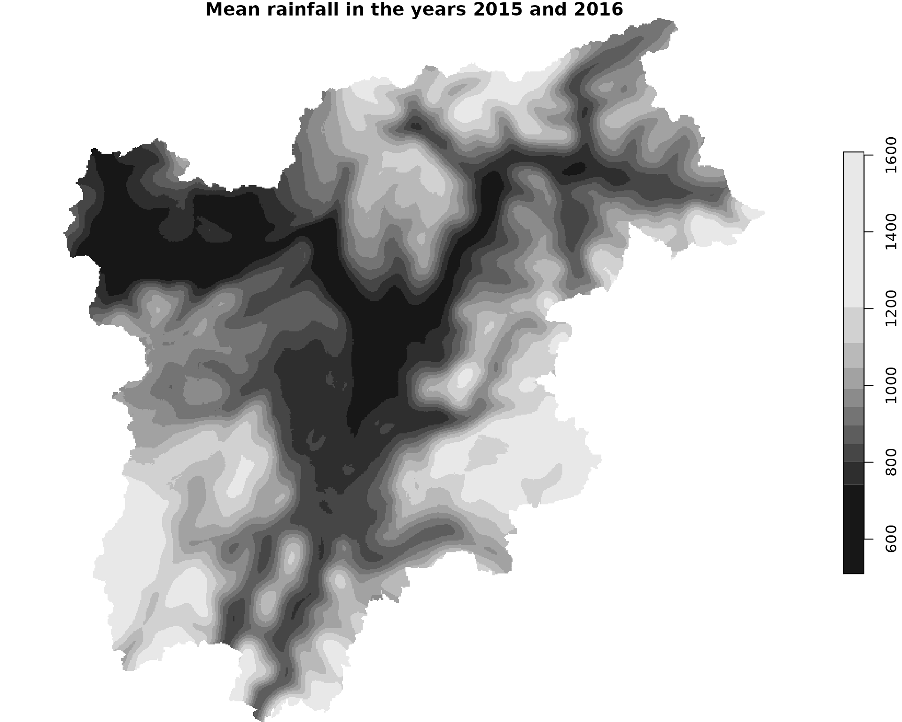

extract_aggregated_values.RmdA common tasks is the calculation of the mean rainfall pixel value in a certain time-period.
In this process you can aggregate for different time-periods (like months or years) and different spatial extents (slope-units, pixel-based…)
Questions could be like:
What is the mean cumulative pixel-value for all pixels in the province of South Tyrol between 1980 and 2018 (pixel based)
What is the maximum monthly value for all months between 2015 and 2018 (pixel based)
What is the mean annual Slope-unit rainfall for all slope units in the province of South Tyrol (polygon-based)
library(rainfallR)
library(stars)
#> Loading required package: abind
#> Loading required package: sf
#> Linking to GEOS 3.8.0, GDAL 3.0.4, PROJ 7.0.0
library(sf)So lets try to answer the very basic question (Question number 1 above) and get the cumulative annual pixel value for each pixel for the year 2015 and 2016
The rastes are stored in NetCDF which each hold the data for one month. In order to get the mean for each pixel in one year we need to sum up the values for the ~ 365 days and devide them by 365. The addition is the part that the function aggregate_rainfall can make.
In the time dimension we want to sum up all values in one month for each pixel. So we set the daily_fun to sum
We also want to sum up all the months, so we set monthly_fun also to sum
And call the function like
os = ifelse(Sys.info()["sysname"] == "Windows", "w", "l")
if(os == "l"){
path_ncdf = "/mnt/CEPH_PROJECTS/Proslide/PREC_GRIDS_updated/"
} else{
path_ncdf = "\\\\projectdata.eurac.edu/projects/Proslide/PREC_GRIDS_updated/"
}
yearly_sums = aggregate_rainfall(
path_ncdf = "/mnt/CEPH_PROJECTS/Proslide/PREC_GRIDS_updated/",
polygon = NULL,
years = 2015:2016,
by = "year", # we only want the computed values for each year
daily_fun = "sum",
monthly_fun = "sum"
)
#> - - - - - - - - - - - - - - - - - - - - 2015
Reading: 1 2015
Reading: 2 2015
Reading: 3 2015
Reading: 4 2015
Reading: 5 2015
Reading: 6 2015
Reading: 7 2015
Reading: 8 2015
Reading: 9 2015
Reading: 10 2015
Reading: 11 2015
Reading: 12 2015- - - - - - - - - - - - - - - - - - - - 2016
Reading: 1 2016
Reading: 2 2016
Reading: 3 2016
Reading: 4 2016
Reading: 5 2016
Reading: 6 2016
Reading: 7 2016
Reading: 8 2016
Reading: 9 2016
Reading: 10 2016
Reading: 11 2016
Reading: 12 2016what we get back is one stars object with a dimension called years
We can plot the results and it looks like this:
plot(yearly_sums)
plot(mean_2k15_2k16, main="Mean rainfall in the years 2015 and 2016")
# get the shape for South Tyrol
st = iffitoR::get_shape_southtyrol()
plot(st[0], add=T, col="red", lty=19)